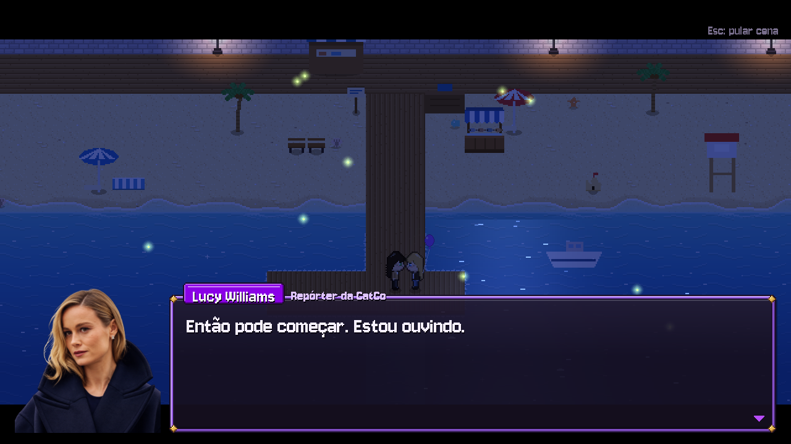

História
A partir do 3º dia começa a história da Luthor Corp: os tios Conrad e Edmund querem a empresa de volta. São 5 capítulos. Cada um tem uma cena (aparece no HUD com o lugar e o horário) e, depois, um objetivo que libera o próximo.
Mostrar os capítulos (spoiler)
| # | Capítulo | Onde e quando | Objetivo depois |
|---|---|---|---|
| 1 | A carta dos tios | na sede da Luthor Corp, das 8h às 12h | Lance 5 produtos no laboratório. |
| 2 | Visita inesperada | na frente da sede, das 9h às 13h | Fature $6.000 no total. |
| 3 | O espião | no laboratório da sede, das 19h às 23h | Leve a ação LCORP a $110. |
| 4 | O dossiê falso | na redação da CatCo, das 13h às 17h | Chegue a 4 corações com Sam, Brainy, Jess e Ian. |
| 5 | O conselho | na sala de reuniões da sede, das 10h às 14h | Fim: produtos +10%, $3.000 e amizade com a equipe. |
A mesa da sala de reuniões da sede mostra os capítulos já vistos. A Andrea Rojas, amiga da Letícia que mora em Metrópolis, é conselheira do lado dela.
Eventos de coração
Além da história da empresa, cada personagem tem seus eventos de coração, com cenas que tocam no lugar e horário certos (veja a página de cada personagem). Eles também podem ser revistos no menu de pausa.
